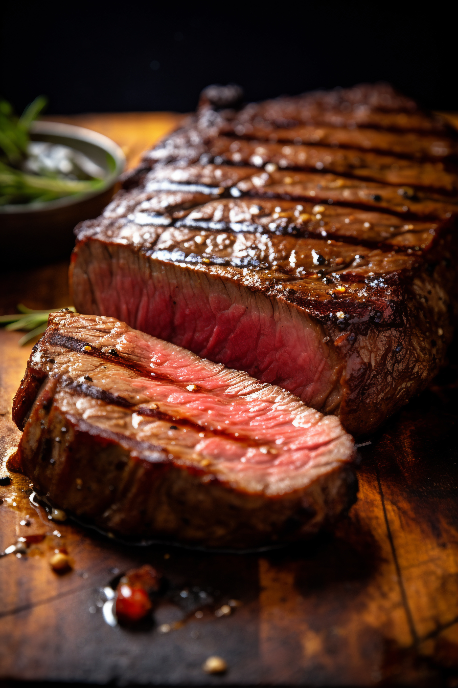

Home
Churrasco

Description
What is a Churrasco? Churrasco is the Brazilian word for barbecue. It's a method of cooking various meats on a purpose-built grill called a "churrasqueira," often with skewers or spits. The term can also refer to a barbecue restaurant or steakhouse. Churrasco is a significant part of Southern Brazilian culture, especially in the state of Rio Grande do Sul, and is more than just a meal; it's a social event
Ingredients
- Picanha (Top Sirloin Cap): This is the most iconic churrasco cut. It's recognizable by its triangular shape and a thick layer of fat on one side.
- Fraldinha (Flank Steak): A flavorful, thin cut that cooks relatively quickly.
- Maminha (Bottom Sirloin): A tender and juicy cut.e
- Costela (Beef Ribs): These are often cooked for a long time over low heat until the meat is incredibly tender.
- Linguicinha (Pork Sausage): A popular appetizer or side dish.
Steps
- Prepare the Fire: Build a fire with charcoal. Let it burn down until you have glowing embers and no open flames. Spread the coals evenly.
- Season the Meat: Take a piece of picanha and pat a generous amount of coarse salt onto all sides. Do this right before you put the meat on the grill.
- Grill the Picanha:
- Place the picanha on a skewer, with the fat cap on the outside.
- Start by placing it on the grill with the fat side down, over a medium-low heat. The goal is to render the fat and create a crispy crust without burning it.
- Turn the skewer periodically to cook the meat evenly.
- Cook until your desired doneness. For medium-rare, the cooking time will be relatively short.
- Serve: Slice the meat against the grain and serve immediately.